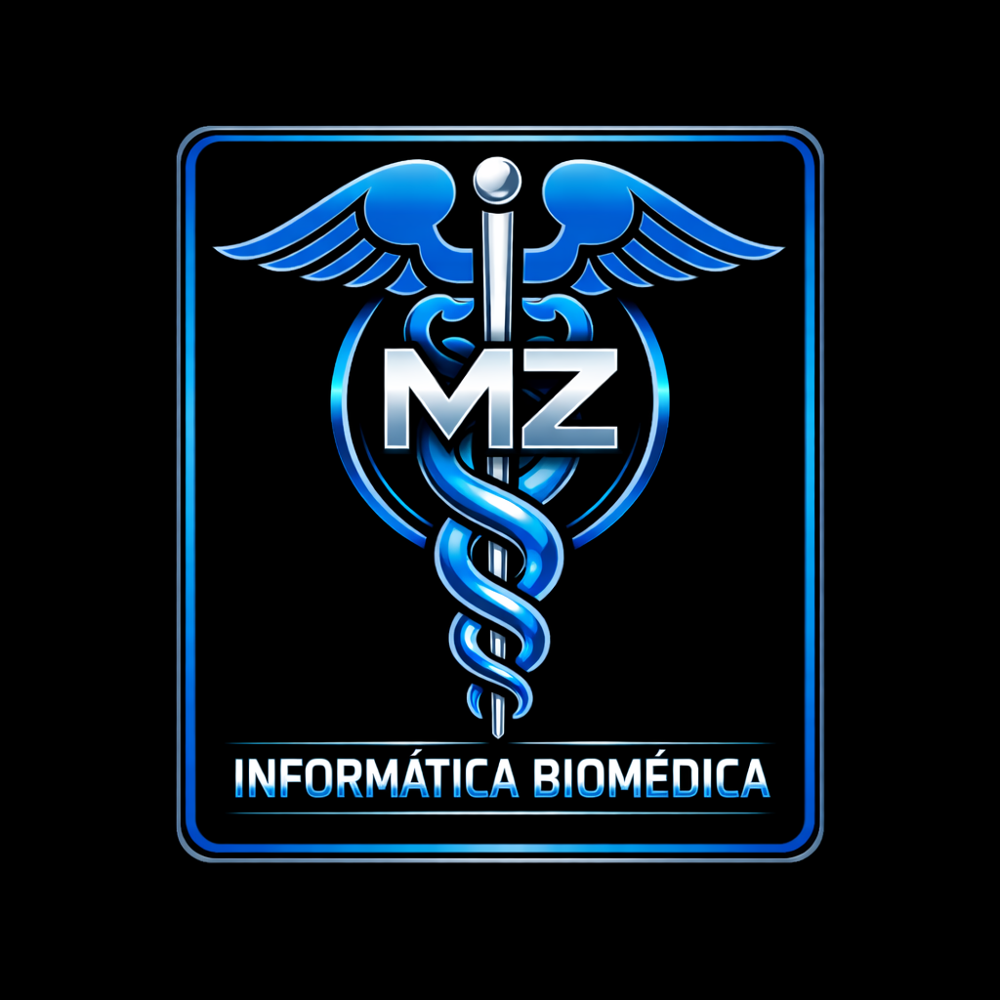

Soy una profesional clínico‑digital con 16 años de experiencia asistencial como TENS y formación avanzada en Informática Biomédica. Integro criterio clínico real con competencias digitales para mejorar HIS, optimizar flujos asistenciales y asegurar la calidad del dato.
16 años de experiencia clínica en UCI, UTI, UPC, urgencias y neurorrehabilitación.
Especialista en HIS, interoperabilidad, HL7, FHIR, CIE‑11,SNOMED.CT y QA funcional.
Comprendo cómo se vive la atención en terreno, anticipo riesgos y valido flujos con criterio clínico real.
Funcionamiento del sistema de salud chileno, sus actores, niveles de atención y flujos asistenciales.
Lenguaje médico esencial para interpretar registros, diagnósticos y documentación clínica.
Instalación, configuración y resolución de incidencias básicas en sistemas informáticos de salud.
Estudio de modelos de atención y su impacto en la gestión clínica y administrativa.
Introducción a HIS, RIS, LIS y plataformas que soportan la operación clínica.
Uso de CIE‑10, CIE‑11, SNOMED, HL7 y FHIR para estructurar, clasificar e interoperar diagnósticos y procedimientos clínicos.
Normativas de acreditación, seguridad del paciente y estándares de calidad asistencial.
Levantamiento, análisis y documentación de requerimientos para proyectos TI en salud.
Creación de wireframes y prototipos funcionales para validar soluciones digitales.
Metodologías ágiles y ciclo de vida del desarrollo aplicados a proyectos clínicos.
Modelamiento de procesos mediante BPMN para optimizar flujos clínicos y administrativos.
Diseño de dashboards, KPIs y análisis para la toma de decisiones en salud utilizando Power BI.
Clasificación y predicción aplicadas a datos clínicos utilizando Power BI, Excel avanzado, RStudio básico y Python introductorio.
Desarrollo de un proyecto aplicado que integra competencias técnicas y clínicas.
Fundamentos de hardware, redes y arquitectura computacional.
Diseño conceptual y lógico de bases de datos clínicas mediante diagramas entidad‑relación.
Extracción, filtrado y análisis de datos utilizando PostgreSQL, SQL Server y DBeaver.
Desarrollo de funciones, triggers y automatizaciones en PostgreSQL y SQL Server para mejorar la integridad del dato clínico.
Experiencia real en entornos clínicos o TI aplicando conocimientos adquiridos.
Procesamiento de grandes volúmenes de datos clínicos utilizando Hadoop, Spark, Python y bases NoSQL como MongoDB.
Refuerzo de conceptos matemáticos y estadísticos esenciales.
Uso avanzado de Excel y Power Query para análisis clínico y operativo.
Cálculo e interpretación de indicadores sanitarios y estudios epidemiológicos utilizando RStudio y Excel.
Desarrollo de pensamiento innovador orientado a soluciones en salud.
Diseño y validación de mejoras en servicios clínicos y digitales mediante metodologías de innovación.
Normativas y prácticas para garantizar seguridad clínica y prevención de riesgos.
Automatización y análisis avanzado mediante Excel y macros básicas.
Elaboración de informes clínicos y operativos basados en datos utilizando Power BI y Excel.
Planificación y estructuración de proyectos TI en salud utilizando MS Project y metodologías ágiles.
Ejecución, control y cierre de proyectos con enfoque profesional utilizando Jira y MS Project.
Aplicación integral de competencias en un entorno real de salud digital.
Compilación de evidencias profesionales y logros académicos.